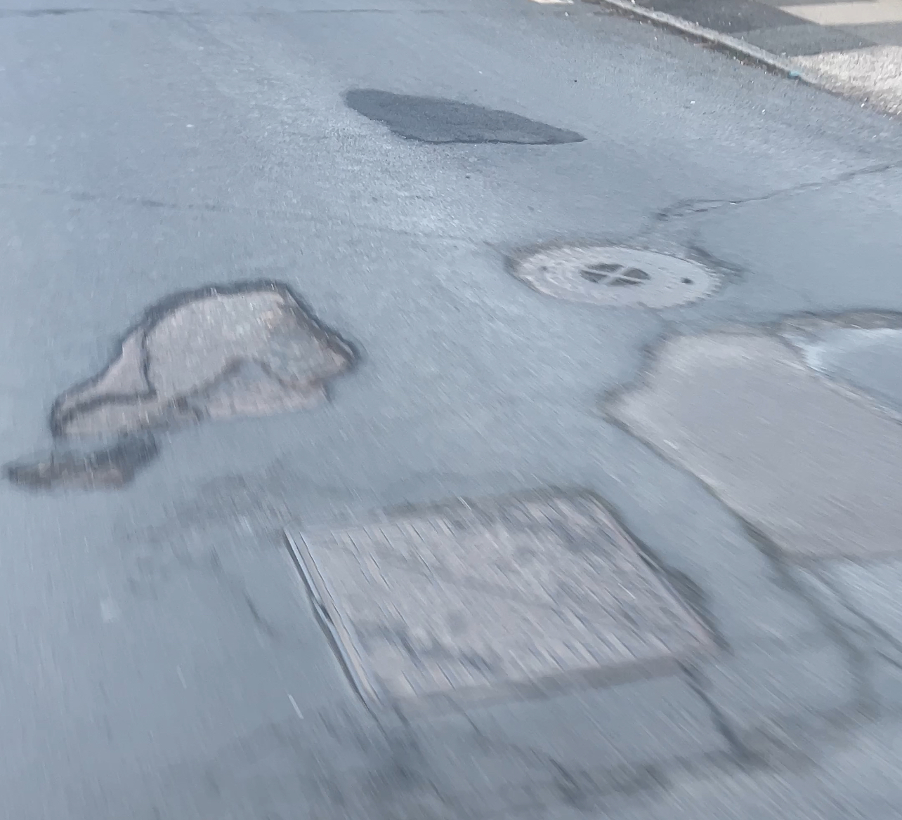
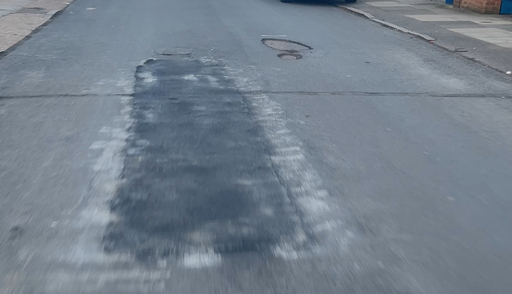

London Borough of Richmond upon Thames · West Twickenham Ward
Fulwell Park Avenue
Surface Material Change 2026
Council notice dated 20 February 2026 · Works scheduled from 10 March 2026
Residents have contacted their West Twickenham ward councillors seeking clarification regarding the proposed resurfacing works.
Questions raised relate to the condition assessment used to prioritise Fulwell Park Avenue within the 2025/26 Highway Maintenance Programme.
Any responses or clarifications received will be reflected on this page so residents can access the most accurate information available.
Email Your Councillors
Residents are encouraged to contact their ward councillors directly regarding the proposed surface material change on Fulwell Park Avenue.
Email Your CouncillorsOpens your email client with the councillors’ addresses and a pre-written message which you may edit before sending.
Residents contacting councillors individually helps ensure local concerns are properly considered.
Timeline of Events
- 7 April 2025 — Transport and Air Quality Committee approves the 2025/26 Highway Maintenance Programme.
- 20 February 2026 — Council notice issued advising of proposed resurfacing works.
- Late February 2026 — Residents begin receiving the notice regarding the planned surface replacement.
- 10 March 2026 — Scheduled commencement date for resurfacing works.
This timeline summarises publicly available information regarding the proposed works.
Page Overview
- Timeline of Events (Feb–Mar 2026)
- What Is Happening — Proposed road surface replacement
- Current Surface — Existing exposed aggregate concrete
- Council Notice — February 2026 works notice
- Points Requiring Clarification
- Resident Poll — Consultation check
- Contact Your Ward Councillors
- Email Template
- Surface Material Information — Concrete vs asphalt
- Examples from Recently Resurfaced Roads — Asphalt fretting observations
- Questions Regarding the Proposed Replacement
- Committee Decision Reference — April 2025 council minutes
- Key Documents — Council notice and highway maintenance programme
- Public Record of Correspondence
What Is Happening?
Fulwell Park Avenue’s exposed aggregate concrete surface is scheduled to be replaced with tarmac from 10 March 2026.
The council notice describes the scheme as “highway maintenance works” and as “road surface improvement works,” stating that “this upgrade” will replace the existing concrete finish with tarmac.
Residents are seeking clarification regarding consultation, assessment and the decision-making process prior to commencement of works.
Email Your Councillors
If you would like clarification regarding this scheme’s assessment and decision making prior to commencement, you may contact your ward councillors directly.
Email Your CouncillorsA brief message asking when councillors were notified and whether residents were consulted is sufficient.
Current Surface
The existing carriageway consists of an exposed aggregate concrete surface which has formed the established road finish for several decades, without issues such as significant potholes.
This road has served the community for decades. Residents are asking why it must now be replaced.
Council Notice
The following notice was received by residents, dated 20 February 2026, advising of the proposed highway works.
Council Notice – dated 20 February 2026 (PDF version)
If the document does not display, click here to download the PDF.
Points Requiring Clarification
The following questions have been raised by residents and have not yet received a response from the council or ward members.
- When ward councillors were notified of this scheme
- Whether residents were consulted regarding replacement of the long-established surface with an alternative material
- Whether any assessment has been undertaken regarding interaction between roadside tree roots and the proposed surface material
- Whether commencement can be paused pending clarification
- Under what delegated authority the decision to proceed was approved
- What condition assessment determined that full resurfacing of Fulwell Park Avenue was required
- Whether a SCANNER survey or similar inspection data was used to prioritise the road within the 2025/26 maintenance programme
- Whether any consideration was given to repairing or retaining the existing exposed aggregate concrete surface rather than replacing it
Resident Poll
Residents are invited to indicate whether they received any consultation prior to the notice dated 20 February 2026.
This poll is administered via Google Forms. Responses are anonymous unless you choose to provide identifying information.
Results will be shared with ward councillors.
Contact Your Ward Councillors
Ward councillors represent residents in decisions of this kind. Individual emails carry more weight than a collective letter.
- Cllr Piers Allen cllr.p.allen@richmond.gov.uk
- Cllr Alan Juriansz cllr.a.juriansz@richmond.gov.uk
- Cllr Laura O’Brien cllr.l.obrien@richmond.gov.uk
Opens your email client with the councillors’ addresses and a pre-written message which you may edit before sending.
Residents are encouraged to contact councillors individually as well as collectively.
Suggested Questions
- When were ward members notified of this scheme?
- Were residents consulted regarding the replacement of the exposed aggregate concrete surface?
- Under what delegated authority was this decision approved?
Email Template
Some residents have asked what to write when contacting councillors. The following template can be copied and edited if helpful.
Subject: Fulwell Park Avenue surface material change Dear Councillor, I am a local resident seeking clarification regarding the proposed replacement of the exposed aggregate concrete surface on Fulwell Park Avenue. Could you please clarify: • When ward members were first notified of this scheme • Whether residents were consulted prior to the decision • What condition assessment determined that full resurfacing is required Given that works are scheduled to begin shortly, I would appreciate any information regarding the decision-making process prior to commencement. Kind regards [Name]
Providing a starter template often helps residents contact councillors more easily, as it removes uncertainty about what to write.
Surface Material Information
Exposed aggregate concrete is a paving technique where the top layer of cement paste is removed to reveal the underlying stones (aggregate). This method is commonly used in driveways, pathways, and public road surfaces.
The technique involves pouring concrete and, while curing, either applying a surface retarder or washing away the top 2–6mm of cement paste to expose the decorative stone layer beneath.
| Exposed Aggregate Concrete | Tarmac (Asphalt) |
|---|---|
| Highly durable structural surface once installed | Typically requires resurfacing more frequently |
| Aggregate texture provides natural traction and non-slip properties | Smoother surface relying on aggregate embedded in asphalt |
| Resistant to wear from traffic and environmental conditions such as freezing and thawing | More susceptible to deformation and rutting under repeated loads |
| Often low maintenance once installed, requiring only periodic cleaning or resealing | Maintenance generally involves patching, resurfacing, and periodic replacement |
| Distinctive textured appearance using decorative stone such as pebbles, granite, or river rock | Uniform dark road surface commonly used across road networks |
Sources: Google search summaries and general descriptions of exposed aggregate concrete and road construction terminology (including Wikipedia references).
Examples of the existing exposed aggregate concrete surface currently present on Fulwell Park Avenue.


Examples from Recently Resurfaced Roads
Residents have visited nearby residential roads where asphalt resurfacing works have recently been carried out.
During site visits conducted in March 2026, areas of surface wear known as “fretting” were observed in several locations.
Fretting is a form of asphalt surface deterioration where the binder holding the aggregate weakens, allowing small stones to loosen from the surface. Over time this can lead to rough patches and exposed aggregate.
The following photographs and video document examples of this type of surface wear observed on nearby roads where resurfacing has been carried out.




These examples are included to document observable surface behaviour on nearby roads that have recently been resurfaced with asphalt.
Short recording showing surface condition and fretting visible across sections of the carriageway.
Lincoln Avenue, Twickenham — surface condition recorded during a resident site visit in March 2026, showing areas of fretting and surface wear on a recently resurfaced residential road.
These observations were recorded by residents during local site visits and are included to provide visual examples of how asphalt surfaces can change over time following resurfacing works.
Map showing the location of observed surface wear on nearby recently resurfaced roads.
Questions Regarding the Proposed Replacement
Residents have raised a number of questions regarding the rationale for replacing the existing surface with tarmac.
- Whether exposed aggregate concrete can be repaired in sections where damage exists, rather than replaced in full
- Whether the proposed tarmac surface will require more frequent maintenance than the existing surface
- Whether the change in surface material has implications for surface water drainage and run-off
- Whether the existing surface has been assessed for structural integrity independently of visual inspection
- Whether the proposed works represent value for public money given the condition and longevity of the existing surface
Committee Decision Reference
During communication with a ward councillor it was indicated that resurfacing policy affecting this road was approved during a council committee meeting in April 2025.
Residents are reviewing the relevant committee documentation to understand how Fulwell Park Avenue was selected within the 2025/26 Highway Maintenance Programme.
The relevant documents are linked below.
Section 53 of the Transport and Air Quality Committee minutes dated 7 April 2025 references approval of the 2025/26 highway maintenance programme.
Fulwell Park Avenue is listed in Appendix 1A of the London Borough of Richmond upon Thames Highway Maintenance Programme 2025/26, which was approved by the Transport and Air Quality Committee on 7 April 2025.
The programme lists Fulwell Park Avenue – Entire Road – West Twickenham as a proposed carriageway resurfacing scheme.
The appendix identifies roads scheduled for resurfacing but does not specify the surface material to be used.
The committee minutes also indicate that resurfacing programmes are informed by engineering inspections and asset condition data used to prioritise roads across the borough.
Residents have therefore requested clarification regarding the condition assessment or inspection data used to prioritise Fulwell Park Avenue for resurfacing within the programme.
Document Trail
- 7 April 2025 — Transport and Air Quality Committee approves the 2025/26 Highway Maintenance Programme.
- 20 February 2026 — Council notice issued to residents advising of resurfacing works.
- Appendix 1A — Fulwell Park Avenue listed as a proposed carriageway resurfacing scheme.
- March 2026 — Residents begin reviewing the published highway maintenance programme documentation and requesting clarification.
Key Documents
Public Record of Correspondence
Residents have contacted West Twickenham ward councillors seeking clarification regarding the proposed resurfacing works on Fulwell Park Avenue.
Emails were sent to the three ward councillors requesting information regarding consultation, condition assessments, and the decision-making process relating to the proposed surface replacement.
This section is included to maintain transparency regarding communication between residents and elected representatives.
If responses or clarifications are received they will be reflected on this page so residents can access the most accurate information available.